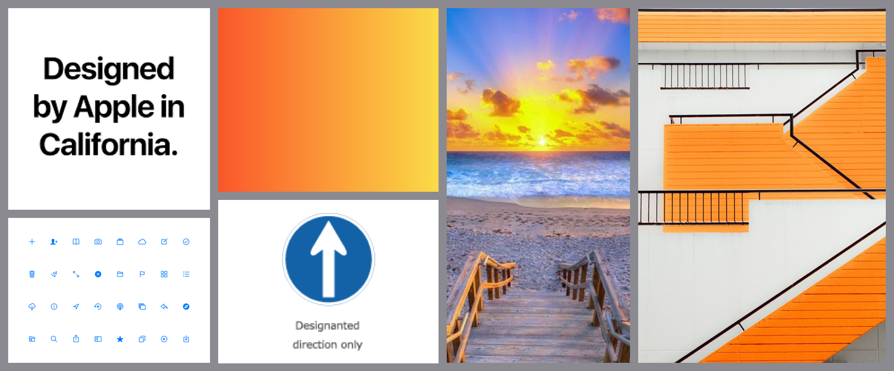
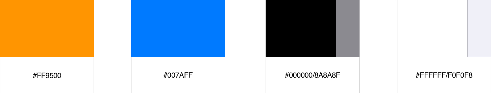
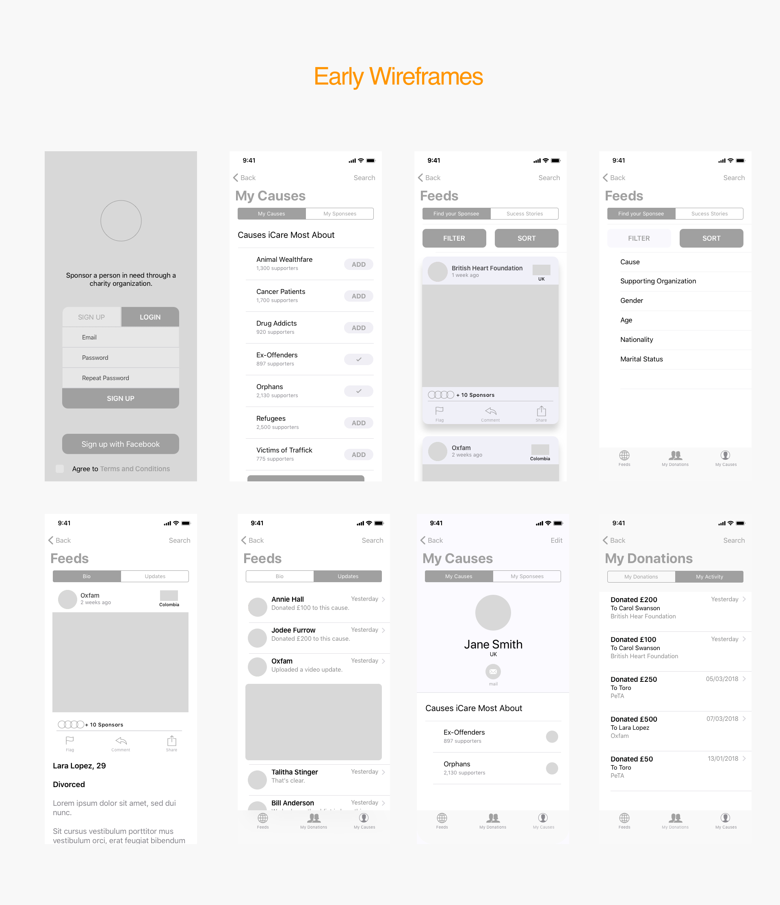
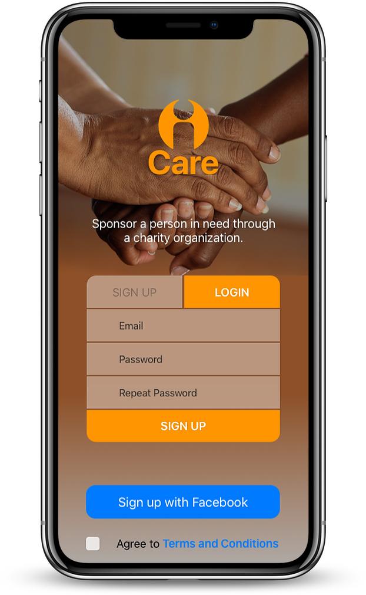
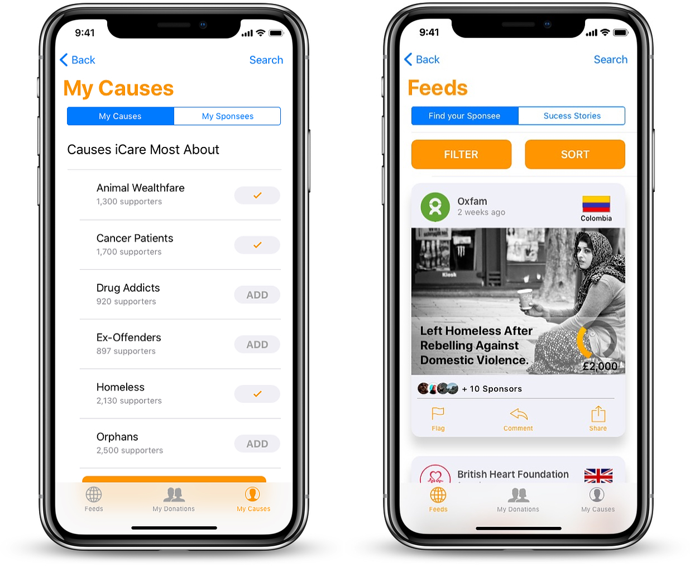
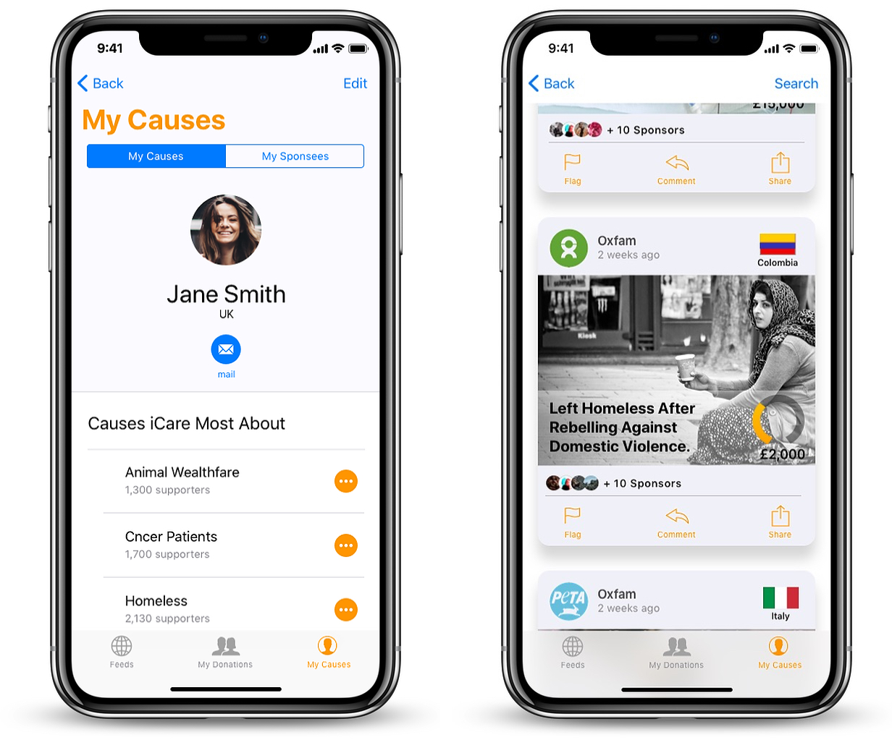

iCare APP
DEVELOPMENT
The app aesthetics were intended to be bright, inviting and clean.
The user interface had to be quick and easy to navigate because it was necessary to attract the users attention quickly to the causes and simplify the donation process,
so the intention to donate doesn’t dissolve in the mist of complex functionality.
COLOR PALET
LOGO
With so many existing charities and crowd funding companies, iCare’s logo needed to stand out and be easily recognisable, memorable and impactful.
The logo was inspired by traffic signs as they provide the elements we were seeking.
TYPOGRAPHY
iCare was designed to be a native iOS app therefore the typography is San Francisco, as per the iOS guidelines.
EARLY WIREFRAMES
MVPs
1. Account Creation: Achievable with the click of a few buttons.
2. Selection of causes of interest and displaying of feeds accordingly: Allowing users to choose the type of causes to be displayed in their feeds and providing filtering options when searching creates a more personalised experience for the user.
3. Description of causes and their updates: Providing updates to causes was key, as these allow donors to see when targets are reached, making it all the more transparent.

4. Stories of success: Displaying all causes which have been successfully founded keeps users interested and motivated to keep supporting.

5. Causes of interest: Display and edition of causes users care about and the causes they have previously donated to.
6. Online payments and list of previous activity: Donations made easily and securely online and display of donation history. It was also necessary to provide an efficient donation method that would’t put donors off.

DURATION
Designing this project took approximately four weeks. The first week was dedicated to gathering requirements and deciding MVPs together with the creation of mood boards and style definition. The second week was dedicated to creating user flows, low and mid fidelity wireframes, and testing. The third week was dedicated to creating high fidelity wireframes and testing. And the final week was dedicated to building mock ups and testing a final time.